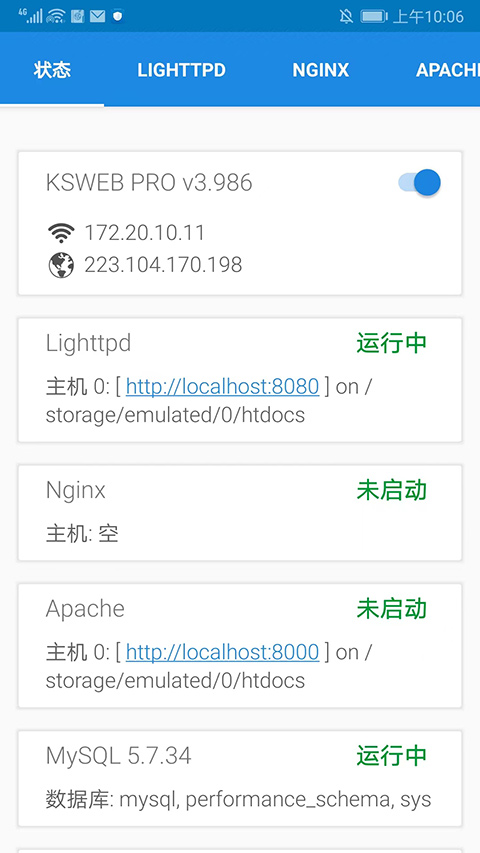
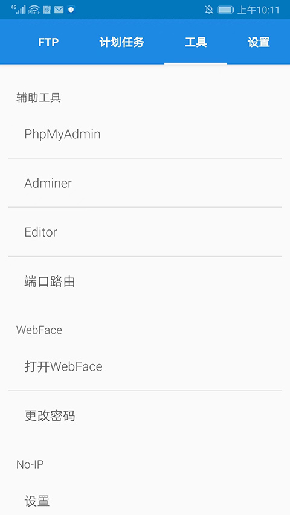

把安卓手机变成服务器——KSWEB 能力面完整盘点
KSWEB 不止是一个 Android 端的集成服务器，它覆盖了 Web 服务、数据库、远程管理、外网穿透到运维排障的完整链路，是移动开发和轻量部署场景下的一把瑞士军刀。
一个把手机当服务器用的完整方案
很多人第一次接触 KSWEB 是为了在手机上跑 WordPress 或 Joomla——从ksweb官网装一个 APK，打开几个开关，CMS 就能在手机浏览器里访问。但用久了会发现，它远不止是一个"集成环境"那么简单。从 Web 服务选型、数据库双引擎、远程管理面板，到局域网验证、外网穿透、日志排错，KSWEB 把一台安卓手机变成服务器所需的每一环都内置了，而且每个环节都有独立的配置入口和诊断工具。这篇盘点就把它的能力面完整铺开——哪些地方做得扎实、哪些地方需要用户自己补位、以及什么样的人真正用得上它。

能力域一：三引擎可选的 Web 服务层
KSWEB 在 Web 服务上给出了 Lighttpd、Apache、Nginx 三个选项，从ksweb下载拿到的安装包就已经内置了这套三引擎，这在移动服务器里算是少见的大方——大多数同类应用只打包一个轻量方案。三者独立启停、各自配置文件互不干扰，TOOLS 标签页里一键切换或并行跑（不同端口）。这个设计的好处是：不同 CMS 或框架对服务器的偏好不同，有的用 Lighttpd 跑得稳、有的在 Nginx 下性能更好，用户不需要为了某个服务器单独装一个 Termux 再编译，在 KSWEB 里点一下就能试。实际使用里 Lighttpd 因为体积小、内存占用低，是移动场景下的首选。
能力域二：双数据库引擎开箱即用
MySQL 5.7.34 和 MariaDB 10.4.34 同时内置，独立启停、互不抢占端口。默认 MySQL 监听 3306、root 空密码，CMS 安装向导直接填 localhost:3306 就能连上。两个数据库不能同时监听同一端口是常见的坑——开了 MariaDB 再开 MySQL 会报端口绑定错误，新手排错时最容易卡在这里。好在 KSWEB 的状态页会实时显示每个组件的运行状态，TOOLS 里还有端口测试工具能直接看到当前是谁在占用某个端口。phpMyAdmin 和 Adminer 两个图形化管理工具也一并打包，建库、导入导出备份点几下就完成，不用装额外的数据库客户端。

能力域三：内置远程管理面板
Web Interface v3.1 是一个被低估的组件。开起来后，同一 Wi-Fi 下的任何设备（电脑、平板）用浏览器访问手机的内网 IP 加端口，就能看到一个轻量管理面板——组件状态、启停服务器、查看错误日志、打开 phpMyAdmin、管理 Cron 计划任务全部能远程操作。默认账号密码是 admin/admin，这个组合太危险，同一局域网里任何人都能登上去停掉你的 Web 服务甚至改配置，所以 SETTINGS 里改登录信息是部署完 CMS 之后必须做的第二件事。不需要手机、不需要装远程桌面软件，在电脑上看日志改配置比在手机小屏幕里敲要舒服得多。
能力域四：从局域网到公网的完整链路
KSWEB 的设计思路是：先把局域网跑通，再决定要不要搞公网。部署完 CMS 打不开时，第一步不是急着找内网穿透工具，而是在同一 Wi-Fi 下的电脑上用手机内网 IP 加端口访问——能访问说明服务器、PHP、MySQL、CMS 全链路正常，问题只在网络层；不能访问就回到 KSWEB 里看哪个组件没起来。这个排查逻辑帮很多人省了大把时间。公网访问方面，KSWEB 没有内置穿透，但它和 No-IP 动态域名、frp、ngrok、Tailscale 这类外部工具配合得很好，局域网验证通过后接哪个方案都行。
能力域五：成体系的运维与排错工具
一个好的服务器应用不是只有"打开开关跑起来"就行，出问题时能不能快速定位才是关键。KSWEB 在这方面做得相当扎实：每个组件（Lighttpd、Nginx、MySQL 等）都有独立的日志文件入口，错误信息直接在应用内查看；TOOLS 标签页里集成了端口测试、phpMyAdmin、Adminer、Cron 管理、FTP 服务；疑难排查从 MySQL 连接失败、端口占用、数据文件损坏到磁盘空间不足都有覆盖，在ksweb文档里能找到完整的步骤说明，甚至列了按步骤走的排查清单。比如 CMS 报"数据库连接失败"时，先看 MySQL 开关、再查 3306 端口被没被 MariaDB 占了、用 phpMyAdmin 手动登一次排除 CMS 配置问题、最后看 MySQL 日志——这套流程对新手和老手都友好。
短板也要说
KSWEB 最明显的局限是它是 Android 专属——iOS 用户用不了，而且依赖 Android 4.4 以上系统版本。它的 Web Interface 只在局域网内好用，暴露到公网需要自己配 VPN，直接 NAT 映射端口等于把管理面板裸奔到互联网上。数据库引擎版本固定（MySQL 5.7、MariaDB 10.4），跑新版 PHP 框架时可能遇到兼容性问题。存储依赖 Android app 私有目录，大文件或高频写入场景下容易触发空间不足告警，MySQL 数据文件损坏也时有发生，需要定期备份。此外，它没有内置 HTTPS 证书管理，外网访问时加密要靠 frp 或 ngrok 侧处理。
什么样的人该用它
移动开发测试者：在手机上搭一套完整的 LAMP/LEMP 环境，随时随地测试 PHP 代码、调试 CMS 模板，不需要租云服务器也不需要本地电脑。Web Interface 远程管理让你在电脑上看日志改配置，体验比在手机小屏幕里敲舒服很多。
轻量部署场景的 owner-operator：个人博客、小团队内部工具、临时活动页面——这些场景不需要买云服务器，一台闲置安卓手机或旧平板就能跑。内网跑通后接一个穿透方案就能对外服务，成本只有电费。
编程学习者：想理解 Web 服务器、数据库、CMS 之间怎么配合，又不想在本地装一堆虚拟机，KSWEB 把完整链路摊在你面前，每个组件独立开关、独立日志，出错了看日志就能定位是哪一层的问题。这比装个一键集成包黑盒跑起来要适合学习得多。
这套资料我分别维护在三个仓库里，国内访问走 Gitee 和 GitCode 更快，GitHub 那边作为备份同步更新：GitHub、Gitee、GitCode。